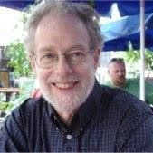

|  | Dr Peter White |
Former academic now retired.
Worked at The University of Queensland since 1990. I gained a PhD and began teaching computer assistsed language learning (CALL) in 1996.
Prior to that I was director of the Language and Technology Centre (LATTICE) attached to the Centre for Language Teaching and Research (CLTR), which folded in 2001.
From 2002 to 2005 I was the admin officer for the Centre for the History of European Discourses (CHED).
I retired from academic life at the end of 2008 and have been retired since.
| Dates | Work |
|---|---|
| 1960-1969 | US Navy in the classified ordnance area. Served on various ships and stations |
| 1969-1971 | Various odd jobs while attending university |
| 1971-1973 | Coordinator, Low Income Housing Coalition in Washington State |
| 1973-1974 | Social Planner, UDPA Planners, Melbourne |
| 1974-1977 | Administrator, North Richmond Family Care Centre |
| 1978-1980 | Secretary, Down to Earth Cooperative Ltd. |
| 1981-1882 | Information Coordinator, Alcohol and Drug Services, NSW Health |
| 1983-1989 | nformation Coordinator, CEIDA, NSW Health |
| 1990-1996 | Director, Language and Technology Centre, UQ |
| 1997-2000 | Lecturer and tutor in computer assisted language learning |
| 2001 | Research officer, School of Social Work and Social Policy, UQ |
| 2002-2005 | Administrative officer, Centre for the History of European Discourses |
| 2005-2008 | Lecturer, School of Languages and Linguistics, UQ |
| 2009-present | Retired, but active in politics |
| cooking | 💥💥💥💥💥 | Creative writing | 💥💥💥💥💥 |
| classical guitar | 💥💥💥💥💥 | Newsletter design | 💥💥💥💥 |
| singing and song writing | 💥💥💥💥💥 | Web design | 💥💥💥 |
| Poetry | 💥💥💥💥💥 |